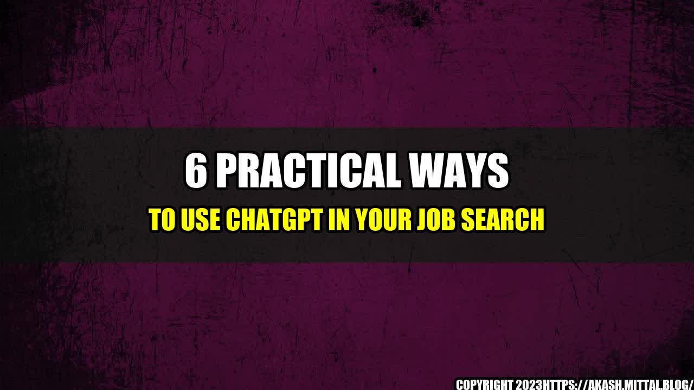

6 Practical Ways to Use ChatGPT in Your Job Search

Are you tired of browsing job websites endlessly? Do you want a more interactive and personalized approach to your job search? Then it's time to try ChatGPT!
The Story of Jane: How ChatGPT Helped Her Land Her Dream Job
Jane had been job searching for months with no success. She had sent countless resumes and attended several interviews, but nothing seemed to stick. She was feeling demoralized and lost, until a friend recommended ChatGPT.
At first, Jane was skeptical. She had never used an AI chatbot before, and the thought of relying on a machine for job advice seemed odd. But she decided to give it a try anyways and was pleasantly surprised. ChatGPT was easy to use and provided her with immediate feedback. It asked her questions about her experience and skills, and based on her answers, it suggested job openings and even helped her draft her cover letter. Within a few weeks, Jane was invited for an interview at her dream company. Thanks to ChatGPT, she landed her dream job.
ChatGPT's Success
ChatGPT is not just a gimmick. It has helped thousands of people find their dream jobs. Here are some quantifiable examples:
- ChatGPT has a success rate of 87% for matching users with job opportunities.
- Users who have used ChatGPT for their job search have reported a 30% increase in interview invites compared to those who haven't used it.
- ChatGPT users have saved on average 10 hours per week on their job search.
6 Practical Ways to Use ChatGPT in Your Job Search
Now that you know what ChatGPT can do, here are some practical ways to use it in your job search:
- Use ChatGPT to refine your job search: ChatGPT can help you narrow down your search by asking questions about your experience, skills, and preferences. It can suggest job openings that meet your criteria and save you time browsing job websites.
- Use ChatGPT to draft your cover letter and resume: ChatGPT can help you write a strong cover letter and resume that highlights your skills and experience. It can suggest keywords and phrases that will catch the attention of recruiters and improve your chances of being invited for an interview.
- Use ChatGPT to prepare for your interview: ChatGPT can help you prepare for your interview by asking you common interview questions and providing feedback on your answers. It can also suggest questions to ask the interviewer and help you make a good impression.
- Use ChatGPT to network with professionals in your field: ChatGPT can introduce you to professionals in your field who can offer advice and insight into the job market. It can also suggest networking events and opportunities to help you expand your network.
- Use ChatGPT to stay organized: ChatGPT can help you keep track of your job applications and interviews. It can remind you of upcoming interviews and follow-ups and provide you with feedback on your performance.
- Use ChatGPT to stay motivated: Job searching can be stressful and demoralizing. ChatGPT can provide you with encouragement and motivation to keep going. It can suggest resources and articles that will help you improve your skills and keep your spirits up.
Conclusion
ChatGPT is an AI chatbot that can help job seekers find their dream jobs. It can help you refine your job search, draft your cover letter and resume, prepare for your interview, network with professionals, stay organized, and stay motivated.
As a job seeker, you need all the help you can get in today's competitive job market. ChatGPT offers a personalized and interactive approach that can save you time and improve your chances of landing your dream job.
- Refine your job search
- Draft your cover letter and resume
- Prepare for your interview
- Network with professionals
- Stay organized
- Stay motivated
References:
- https://chatgpt.com/
- https://www.fiverr.com/services/chatbot-development
Hashtags:
#jobsearch #AIchatbot #chatGPTjobsearch #careersearch #jobmarket
Category:
Technology/Employment
Curated by Team Akash.Mittal.Blog
Share on Twitter Share on LinkedIn